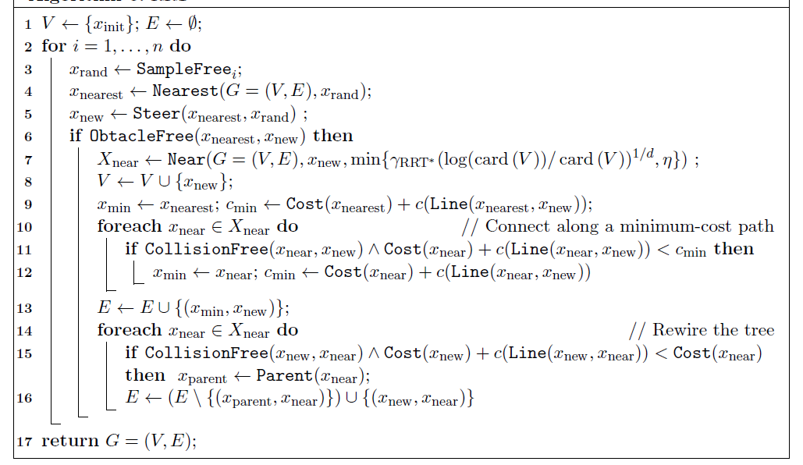

路径规划之 RRT_Star
RRT_Connect 相对于 RRT 虽然增加了启发式策略和贪婪思想，但他们的路径都不是最优的。搜索路径都是基于随机采样，缺少评价函数。RRT_Star 算法在 RRT 的基础上，基于代价函数来重新选择新父节点，重新布线新子节点，保证算法渐进最优解。
¶算法描述
RRT* 构造方式和 RRT 类似，区别在于重新选择父节点和重新布线这个过程。在寻找到新节点 $q_{new}$ 时，先进行碰撞检测，若 ($q_{near}$， $q_{new}$) 没有碰撞，并不立即将新节点和新边加入到树中。而是首先重新选择父节点：寻找以 $q_{new}$ 为圆心，以半径$r$内的所有邻接节点，作为$q_{new}$ 的潜在父节点 $q_{proential_parents}$ 。然后遍历所有潜在父节点，若 $q_{protential_parents}$ 到 $q_{new}$ 无碰撞，则计算从起点 $q_{start}$ 到潜在父节点$q_{protential_parents}$，再到新节点$q_{new}$的总路径长。选择最短路径的潜在父节点(假设记为$q_{min_parent}$)作为$q_{new}$的父节点，添加边 ($q_{min_parent}, q_{new}$) 到树中。 在完成父节点的重新选择后，再对该邻域重新布线：再次遍历该邻接节点集合中除 $q_{min_parent}$ 之外的剩余节点，作为 $q_{new}$ 的潜在子节点 $q_{proential_children}$，若 $q_{new}$ 到 $q_{protential_children}$ 无碰撞，则计算从起点 $q_{start}$ 到新节点 $q_{new}$ ，再到潜在子节点 $q_{protential_children}$ 的总路径长。选择最短路径的潜在子节点 (假设记为 $q_{min_child}$ )，将该节点的父节点设置为 $q_{new}$ 的新节点，删除边 ($q_{parent_of_min_child}$, $q_{min_child}$) 添加边 ($q_{new}$, $q_{min_parent}$) 到树中。因为我们通过链表来构建树，所以设置父节点也相当于添加边；更改父节点，相当于删除了原来的边并添加新边。通过上述两次选择，使得 RRT* 达到渐进最优，并且构造树的节点和边大大减少，提高的搜索效率。
¶伪码

¶实现
¶数据结构
1 | class Node(object): |
¶接口
1 | ''' |
¶Planning
1 | def Planning(self): |
¶参考资料
[1]: Karaman S, Frazzoli E. Sampling-based algorithms for optimal motion planning[J]. The international journal of robotics research, 2011, 30(7): 846-894.
[2]: Choset. Principles of Robot Motion: Theory, Algorithms, and Implementations[J]. Proceedings of the Society for Experimental Biology & Medicine Society for Experimental Biology & Medicine, 2005, 147(1):512-512.
[3]: https://blog.csdn.net/weixin_43795921/article/details/88557317
[4]: https://www.cnblogs.com/guojun-junguo/p/10198144.html